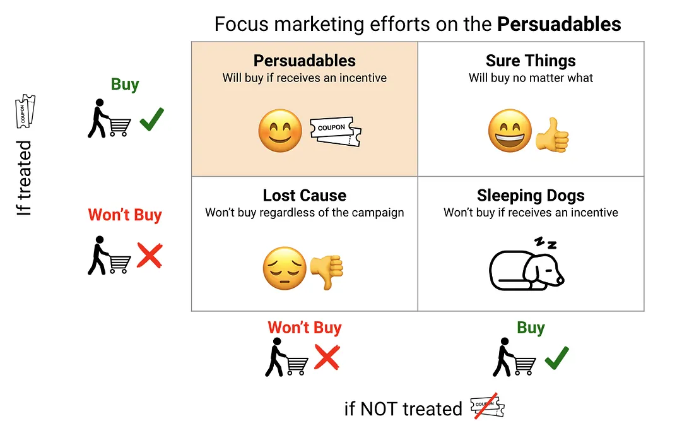
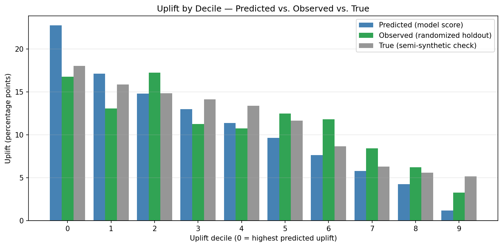

3.6 Uplift-Modeling für das Targeting
Über die deutsche Ausgabe
Diese Seite ist eine KI-Übersetzung der englischen Ausgabe von Marketing Science in Python. Die englische Ausgabe ist maßgeblich und hat bei Abweichungen Vorrang. Code, Notebooks und Text in Abbildungen bleiben auf Englisch. Englische Ausgabe lesen
Welche Kunden sollten die nächste Kampagne bekommen? Die meisten Teams antworten mit einem Response-Modell: Kunden nach ihrer Kaufwahrscheinlichkeit reihen und die Spitze dieser Liste ansprechen. Das Problem ist, dass viele Kunden mit hoher Wahrscheinlichkeit konvertieren, ob Sie sie kontaktieren oder nicht, sodass Ausgaben für sie nichts bewegen. Uplift-Modeling reiht Kunden stattdessen danach, wie stark der Kontakt ihr Verhalten voraussichtlich verändert: Es zielt auf diejenigen, die kaufen, weil Sie sie kontaktiert haben, nicht auf diejenigen, die ohnehin gekauft hätten. Das macht es überall dort wertvoll, wo Kontakt Kosten verursacht: Das Budget sollte dorthin gehen, wo es ein Ergebnis verändert, nicht dorthin, wo es bei einem Verkauf mitläuft, der ohnehin gekommen wäre.
- Ein Response-Modell sagt vorher: \(P(\text{purchase})\)
- Ein Uplift-Modell sagt vorher: \(P(\text{purchase} \mid \text{treated}) - P(\text{purchase} \mid \text{not treated})\)
Diese zweite Größe ist der Treatment-Effekt pro Kunde, der CATE; §3.5 hat behandelt, wie man ihn schätzt. Dieser Score ist nur der Messschritt. Der nächste Schritt ist, ihn in eine Targeting-Regel zu verwandeln und auf Holdout-Daten zu prüfen, ob das Handeln nach der Reihung tatsächlich Wert liefert.

Die anzusprechenden Kunden verstehen
Um Uplift-Modeling gut anzuwenden, hilft es, sich vier Arten von Kunden vorzustellen, definiert danach, wie sie auf den Kontakt reagieren.

- Persuadables (Überzeugbare): kaufen nur, wenn sie kontaktiert werden. Das sind die idealen Ziele; die E-Mail verändert ihr Verhalten, und Ihr gesamter Ertrag kommt von ihnen.
- Sure Things (sichere Käufer): kaufen so oder so. Sie zu kontaktieren gibt Budget für keinen inkrementellen Verkauf aus.
- Lost Causes (verlorene Fälle): kaufen nie. Der Kontakt ist verschwendet.
- Sleeping Dogs (schlafende Hunde): würden von sich aus kaufen, aber der Kontakt vertreibt sie. Sie zu erreichen kostet Sie aktiv etwas.
Ein Response-Modell, das der Kaufwahrscheinlichkeit nachjagt, füllt seine Liste mit Sure Things. Ein Uplift-Modell, das dem Treatment-Effekt nachjagt, zielt auf die Persuadables und hält sich vom Rest fern. Dieser Unterschied ist der ganze Punkt.
Uplift hat zwei Methodenfamilien: die Meta-Learner aus §3.5 und Entscheidungsbäume, die so gebaut sind, dass sie direkt nach Uplift aufteilen; ihr Vorteil ist der Umgang mit mehreren Treatment-Armen zugleich (Angebote von 5%, 10% und 20% in einem Modell vergleichen). Dieses Kapitel bleibt auf der Meta-Learner-Route und verwendet EconML wie in §3.5 plus scikit-uplift, um die Reihung zu bewerten; CausalML, die Bibliothek von Uber, ist die etablierte Heimat der baumbasierten Methoden.
Der Datensatz
Wir verwenden das semisynthetische MineThatData-Beispiel aus §3.5 erneut: Kevin Hillstroms randomisiertes E-Mail-Experiment, beschränkt auf die Arme Herren-E-Mail und keine E-Mail (42,613 Kunden, grob 50/50 aufgeteilt). Die Kundenmerkmale und die Treatment-Zuweisung sind echt; nur das Ergebnis ist simuliert, sodass wir den wahren Effekt jedes Kunden kennen und das Modell in jedem Schritt bewerten können. Der durchschnittliche Effekt, den wir eingebaut haben, beträgt etwa 11 Prozentpunkte und ist größer für Herrenkäufer, kürzlich aktive Kunden und Multichannel-Käufer.
from msbook.data import load_minethatdata
df = load_minethatdata()
df = df[df['segment'].isin(['Mens E-Mail', 'No E-Mail'])].copy()
df['treatment'] = (df['segment'] == 'Mens E-Mail').astype(int)Jede Zeile ist ein Kunde: die echten Hillstrom-Merkmale, das randomisierte Treatment-Flag und das simulierte Conversion-Ergebnis, an dem wir bewerten.
| Spalte | Bedeutung |
|---|---|
| recency | Monate seit dem letzten Kauf |
| history | Ausgaben der letzten 12 Monate ($) |
| mens | Herrenartikel gekauft (0/1) |
| channel | Telefon / Web / Multichannel |
| treatment | 1 = Herren-E-Mail, 0 = Kontrolle |
| conversion | nach der Kampagne gekauft (0/1) |
Begleit-Notebook: sec3.6_uplift_modeling.ipynb baut den S-Learner-Uplift-Score auf MineThatData und bewertet ihn mit Uplift- und Qini-Kurven, Dezil-Uplift und einer Targeting-Regel nach Nettowert.
Auf GitHub ansehen
Das Uplift-Modell trainieren
Der Uplift-Score ist einfach der CATE. Wir passen die Meta-Learner aus §3.5 erneut an und behalten den, der den wahren Effekt auf dem Holdout-Set am besten wiederfindet: den S-Learner, dessen Schätzungen mit 0.77 mit der Wahrheit korrelieren (der vollständige Vergleich ist Tabelle 1 in §3.5). Sein vorhergesagter CATE ist der Uplift-Score, und die Anpassung ist derselbe EconML-Aufruf wie in §3.5, es gibt also nichts Neues zu installieren:
from econml.metalearners import SLearner
from lightgbm import LGBMRegressor
uplift = SLearner(overall_model=LGBMRegressor())
uplift.fit(Y=conversion_train, T=treatment_train, X=X_train)
uplift_score = uplift.effect(X_eval) # one CATE / uplift score per customerEvaluation
Der Uplift-Score ist nur nützlich, wenn Kunden mit höheren Scores wirklich mehr inkrementelle Conversions erzeugen als Kunden mit niedrigeren Scores. Die erste Prüfung ist lokal: Teilen Sie die Holdout-Kunden nach Uplift-Score in Dezile auf (Dezil 0 = höchster Score) und lesen Sie den Uplift innerhalb jedes Dezils ab. Der semisynthetische Aufbau erlaubt uns, drei Spalten zu vergleichen: den vom Modell vorhergesagten Uplift, den beobachteten Uplift auf dem randomisierten Holdout (die Differenz der Conversion-Raten zwischen Treatment und Kontrolle innerhalb jedes Dezils) und den wahren Uplift.
| Dezil | Vorhergesagter Uplift | Beobachteter Uplift | Wahrer Uplift |
|---|---|---|---|
| 0 (höchster Score) | 22.7% | 16.8% | 18.0% |
| 4 (Mitte) | 11.4% | 10.8% | 13.4% |
| 9 (niedrigster Score) | 1.2% | 3.3% | 5.1% |

Die genauen Zeilen sind verrauscht, besonders die Spalte des beobachteten Uplifts, weil jedes Dezil nur etwa 1,300 Kunden enthält. Aber die Reihung funktioniert: Das oberste Dezil zeigt einen weit höheren beobachteten und wahren Uplift (etwa 17 Punkte gegenüber einem Durchschnitt von 11 Punkten) als das unterste Dezil. Diese Ordnung ist es, die wir brauchen. Wir brauchen nicht jedes Dezil perfekt monoton; konzentrieren Sie sich auf die Spitze der Reihung, nicht auf die einzelnen Zeilen am Ende.
Die Dezil-Tabelle ist eine lokale Sicht. Die globale Diagnostik ist die Qini-Kurve: Reihen Sie die Kunden vom höchsten zum niedrigsten Uplift und tragen Sie die kumulierten inkrementellen Conversions, auf die Treatment-Gruppe normiert, auf, während Sie tiefer in die Liste hinein ansprechen. Eine Reihung mit echtem Signal verläuft oberhalb der Diagonalen, die Sie sehen würden, wenn Sie Kunden zufällig kontaktieren. (Die einfache Uplift-Kurve zeigt dieselbe Form auf einer nicht normierten Skala; die Qini-Kurve ist der Standard für den Vergleich von Uplift-Modellen, weil sie verlässlich bleibt, wenn der Anteil der Behandelten entlang der Reihung variiert.)

Hier bleibt die Kurve von Anfang an deutlich über der Zufallslinie: Die obersten 30% der Reihung anzusprechen erfasst etwa 42% der inkrementellen Conversions (gegenüber 30% bei zufälligem Targeting), und die obere Hälfte erfasst etwa 62%. Das ist es, was die Reihung handlungswürdig macht.
Beide Flächenkennzahlen sind positiv, was formal bedeutet, dass die Reihung zufälliges Targeting übertrifft:
from sklift.metrics import uplift_auc_score, qini_auc_score
auuc = uplift_auc_score(conversion_eval, uplift_score, treatment_eval)
qini = qini_auc_score(conversion_eval, uplift_score, treatment_eval)
print(f"AUUC = {auuc:.4f} Qini = {qini:.4f}") # both > 0 ⇒ better than randomAUUC = 0.0404 Qini = 0.0695Diese verdichten die ganze Kurve auf eine einzige Zahl. Der Qini-Koeffizient ist die Kennzahl, die beim Vergleich von Uplift-Modellen zu nennen ist: Er ist positiv, wenn die Reihung den Zufall schlägt, und über Modelle auf demselben Holdout-Set hinweg vergleichbar, aber keine absolute Geschäftskennzahl. AUUC misst dieselbe Idee auf der Uplift-Kurve. Ein Vorbehalt zu beiden: Der S-Learner wurde auf demselben Holdout ausgewählt, diese Zahlen sind also optimistisch. Ein Produktionsbericht behält ein unberührtes finales Holdout für die Kernzahlen.
Die Zielliste ableiten
Ein Score wird erst handlungsfähig, wenn Sie ihn mit Geschäftskennzahlen verbinden. Sagen wir, jede inkrementelle Conversion ist $30 Marge wert und einen Kunden zu kontaktieren kostet $3. Dann sollten Sie nur Kunden behandeln, deren Uplift den Break-even von 10% übersteigt, und der erwartete Nettowert für jeden Kunden ist sein Uplift mal dem Wert einer Conversion, minus den Kontaktkosten:
value_per_conversion = 30.0 # $ margin per incremental conversion
treatment_cost = 3.0 # $ per contacted customer (email + offer)
net_value = uplift_score * value_per_conversion - treatment_cost
# Target the deciles (or customers) where net value > 0.
| Dezil | Vorhergesagter Uplift | Nettowert pro Kunde | Entscheidung |
|---|---|---|---|
| 3 | 13.0% | $0.90 | Ansprechen |
| 4 | 11.4% | $0.41 | Ansprechen |
| 5 | 9.7% | -$0.10 | Überspringen |
| 6 | 7.6% | -$0.71 | Überspringen |
Mit $30 Marge pro inkrementeller Conversion und $3 Kontaktkosten liegt der Break-even-Uplift bei 10%. Die ersten fünf Dezile überschreiten diese Schwelle beim vorhergesagten Uplift, also lautet die Regel, die obere Hälfte der Liste anzusprechen und den Rest zu überspringen. Die konkreten Konstanten dienen nur der Veranschaulichung; die Regel ist, was zählt: Uplift in erwarteten Wert umrechnen, die Kontaktkosten abziehen und nur dort ansprechen, wo das Ergebnis positiv ist. Das wird Ihre Kundenliste. In diesem Durchlauf stimmen die vorhergesagte und die beobachtete Spalte nicht ganz überein: Der beobachtete Nettowert bleibt zwei Dezile über die vorhergesagte Schwelle hinaus positiv. Genau diese Grenzzone ist es, wo sich ein frisches randomisiertes Holdout bezahlt macht, bevor Sie Budget binden.
Das Wichtigste in Kürze
- Uplift reiht Kunden danach, wie stark der Kontakt ihr Verhalten verändert, nicht danach, wie wahrscheinlich sie kaufen. Das hält das Budget von den Sure Things fern und weg von den Sleeping Dogs.
- Bestätigen Sie auf einem frischen randomisierten Holdout, dass die Reihung den Zufall schlägt, und rechnen Sie den Uplift dann in erwarteten Nettowert um: Sprechen Sie nur dort an, wo Uplift mal Conversion-Wert die Kontaktkosten übersteigt.